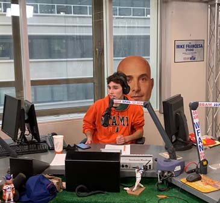

Possible Shift?
NBA Internship
Although my dream in life is to be an on air personality, many of my trusted mentors have told me to get an intership at a corporate position. It is good practice to see how the business works both on and off camera. For this reason, I have applied to an internship at the NBA.

UStadium Show
My future with UStadium is on pause at the moment. Due to some behind the scenes issues, we are forced to look for a new cohost for The Sonny Carton Show.
Once a reliable co-host is found expect the UStadium content to start back up. The show will focus on all things sports, with a special focus on the Big Apple.
Upcoming WFAN Show
Carton & Russo 2
I am thrilled to announce that on December 22, 2022, I will be doing the second ever Carton and Russo radio show. I am hosting the 2 hour show with Colin Russo and we'll try to do better than we did two years ago.
Tensions will certainly be flaring during our show due to a random coincidence. In a twist of fate, Colin's Jaguars, and my Jets play each other on Thursday Night Football, the night of our show together.
Expect us to get into that game, everything that has happened in the MLB offseason, and anything else NY sports.
Call Me Crazy
Lifelong Dream
Everyone has always asked me what I want to be in life. I have a dream that many people may say is crazy.

Ever since I was the boy sitting in that chair above, I have thought that there's something missing in the world of sports broadcasting. I plan to demote my life to finding what's missing.
Once I find the missing link, whatever that may be, I will pursue that career until I am the best to ever do it.